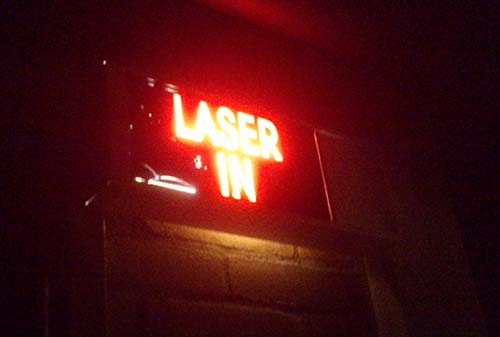

Previous work
Tocano
Tocano is a technology startup company based in Delft. During a summer internship I was involved in setting up the prototyping rig, doing scientific research and testing with new equipment and materials. Equipment includes high power lasers, linear actuators and microcontrollers.
Besides learning commercial prototyping, I also learned a lot of 'soft knowledge' working in a university lab and with all the joys and troubles of working at a startup.
I can't get into too much detail, since the company is working in stealth mode. Watch their website to see if they have published any more information yet: www.tocano.nl

Architecture
I followed the first year of the Bachelor program Architecture at TU Delft. Yes, you read that right.
During that year I found out that I was not suited to study architecture so I decided to switch to a more scientific field. So I chose Applied Physics. Despite this switch, a lot of the things I learned at Architecture have stayed in my head. In particular architectural renders, urbanism and maps interest me.